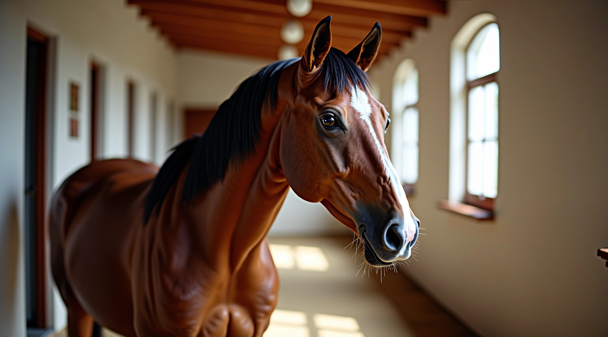

تغذية الخيل وإدارة الاسطبل
أدلة عملية وشاملة لرعاية خيلك بشكل صحيح
اختيار التبن المناسب
التبن عنصر أساسي في غذاء الخيل. نشرح كيفية التمييز بين التبن عالي الجودة والتبن الرديء، والتحقق من خلوه من الأمراض والعفن والرطوبة الزائدة.
نسب الحبوب الصحيحة
توازن التغذية مهم جداً. نوضح كيفية حساب الكميات الصحيحة من الشعير والذرة والنخالة حسب عمر الحصان وحالته الصحية والنشاط البدني.
الماء والترطيب
الماء النظيف متوفر دائماً أساسي للحصان. نشرح أهمية الترطيب الصحيح وكمية الماء التي يحتاجها الحصان يومياً في الحر والبرد.
إدارة الاسطبل الفعالة
الاسطبل النظيف والمنظم يحافظ على صحة الخيل. نقدم إرشادات عملية عن التهوية والإضاءة وتنظيف الأكشاك والتخلص من الفضلات بشكل صحيح.
الصحة والوقاية
الوقاية أفضل من العلاج. نناقش كيفية اكتشاف الأمراض المبكرة والحفاظ على نظافة الخيل والاهتمام بالأسنان والحوافر والتطعيمات الضرورية.
جدول التغذية اليومي
النظام الثابت يريح الخيل ويساعده على الهضم. نوفر أمثلة لجداول تغذية يومية حسب نوع الخيل والعمر والاستخدام والفصل.
من نحن
موقعنا متخصص في تقديم معلومات عملية وموثوقة عن تغذية الخيل وإدارة الاسطبلات. نعتقد أن الخيل يستحق رعاية احترافية وتغذية سليمة. لذلك نجمع المعلومات من مصادر موثوقة ونقدمها بطريقة واضحة وسهلة الفهم.
أدلتنا تغطي كل شيء من اختيار الأعلاف إلى نظافة الاسطبل، من صحة الحصان إلى الجدول الغذائي اليومي. نحن نركز على المعلومات العملية التي تساعدك فعلاً في رعاية خيلك بشكل أفضل.
معلومات عن الموقع
نقدم معلومات موثوقة منذ سنوات
أدلة شاملة عن تغذية الخيل وإدارة الاسطبل والصحة
محتوى متنوع يغطي جميع جوانب رعاية الخيل
نعمل على تحسين المحتوى والمعلومات بشكل مستمر
كيف يتم إعداد أدلتنا
أدلتنا لا تأتي من فراغ. نجمع المعلومات من مصادر موثوقة عن تغذية الخيل والعناية البيطرية. كل مقال يمر عبر عملية مراجعة دقيقة للتأكد من الدقة والوضوح. نركز على المعلومات العملية التي تساعدك فعلاً في عملك اليومي مع خيلك.
نحدّث المحتوى بانتظام لإضافة معلومات جديدة ولضمان أن كل شيء ما زال دقيقاً وملائماً. نستمع إلى ملاحظات القراء ونحسّن الأدلة بناءً على احتياجاتهم الفعلية.
هدفنا بسيط: أن نقدم معلومات تساعدك على فهم احتياجات خيلك بشكل أفضل وتحسين طرق الرعاية والتغذية. نحن نصدق أن الخيل يستحق العناية الاحترافية والمعلومات الصحيحة.
فوائد المعلومات الصحيحة
خيل صحي وقوي
حصان سعيد
توفير المال
معرفة واضحة
قيمنا الأساسية
الوضوح
نشرح الأمور بطريقة مباشرة وسهلة الفهم. لا تعقيد. لا مصطلحات معقدة. فقط معلومات عملية تستطيع تطبيقها مباشرة.
الموثوقية
كل معلومة نقدمها قد تم التحقق منها. نعتمد على مصادر موثوقة ونراجع المحتوى بانتظام للتأكد من أنه دقيق وحديث.
العناية بالخيل
خيلك يستحق الأفضل. نهتم برفاهية الخيل ونركز على الممارسات التي تحافظ على صحته وسعادته وراحته.
التعليم المستمر
نحن نتعلم باستمرار ونضيف معلومات جديدة. الصناعة تتطور، والمعرفة تتغير. نحن نتابع أحدث الممارسات والمعلومات.
رحلتنا
بدأنا بنشر أول أدلتنا عن تغذية الخيل والعناية الأساسية
أضفنا معلومات تفصيلية عن إدارة الاسطبل والصحة الوقائية
توسعنا لإضافة أدلة موسمية وتحديثات منتظمة للمحتوى
نواصل تحسين وتطوير الأدلة بناءً على احتياجات القراء
الأدلة الرئيسية
ابدأ من هنا للتعرف على أساسيات تغذية الخيل وإدارة الاسطبل

اختيار التبن المناسب لخيلك
التبن عنصر أساسي في غذاء الخيل. نشرح كيفية اختيار التبن عالي الجودة والتحقق من خلوه من الأمراض والعفن.
اقرأ المزيد
نسب الحبوب الصحيحة
توازن التغذية مهم جداً. نوضح كيفية حساب الكميات الصحيحة من الحبوب حسب عمر وحالة الحصان.
اقرأ المزيد
إدارة الاسطبل الفعالة
الاسطبل النظيف والمنظم يحافظ على صحة الخيل. نقدم إرشادات عملية عن التهوية والنظافة.
اقرأ المزيدهل لديك أسئلة؟
نحن هنا للمساعدة. تواصل معنا للإجابة على أي استفسارات عن تغذية الخيل أو إدارة الاسطبل.
تواصل معنا الآنمبادئ عملنا
البحث الدقيق
نجمع المعلومات من مصادر موثوقة
الكتابة الواضحة
نشرح الأمور بطريقة سهلة الفهم
المراجعة الدقيقة
نتحقق من الدقة قبل النشر
التحديث المستمر
نضيف معلومات جديدة بانتظام
نستخدم ملفات تعريف الارتباط لتحسين تجربتك على الموقع. بمتابعة الاستخدام، فإنك توافق على سياستنا.